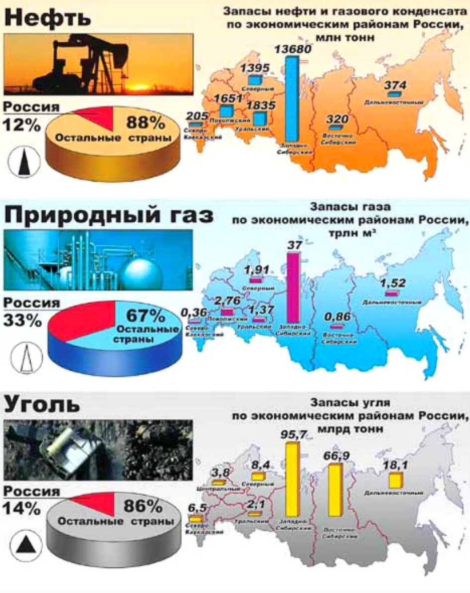

Россия обладает большими запасами многих полезных ископаемых, по запасам природного газа она занимает первое место в мире
Железные руды приурочены к фундаменту древних платформ. Особенно велики запасы месторождений Курской магнитной аномалии (КМА), в Центрально-Черноземном районе, где руду высокого качества добывают в карьерах.
К Балтийскому щиту приурочены Оленегорское и Ковдорское месторождения в Мурманской обл. и Костомукшское в Карелии.
Одним из важных железорудных районов России остается Урал, хотя запасы его уже сильно истощены.
90% запасов железных руд сосредоточены в европейской части страны, но богаты железными рудами и Сибирь и Дальний Восток. В Западной Сибири это месторождения Горной Шории в Кемеровской области, в Восточной Сибири – Абаканское в Хакасии и Рудногорское и Коршуновское месторождения в Иркутской области, а также месторождения в районе Нерюнгри на юге Якутии; на Дальнем Востоке – месторождения в бассейне реки Зея.
Месторождения медных руд сосредоточены в основном на Урале (Краснотурьинское, Красноуральское, Гайское и др.) и на Кольском полуострове (Мончегорское месторождение медно- никелевых руд в Мурманской области), а также в горах Южной Сибири (Удокан) на севере Восточной Сибири – Талнахское месторождение в районе Норильска.
Крупнейшие месторождения алюминиевых руд (бокситов) расположены на Урале, в Северо- Западном районе – Тихвинское (бокситы) и Хибинское (нефелины); в Восточной Сибири – на юге Иркутской области и Красноярского края.
Крупнейшая нефте-газоносноная провинция России – Западно-Сибирская – расположена на территории Западно-Сибирского района. Волго-Уральская – в пределах Поволжского и Уральского районов. Тимано-Печерская занимает восточную часть территории Северного района и акваторию Баренцева и Карского морей. Значительные запасы газа находятся на территории Астраханской области, нефти – на территории Северного Кавказа.
Из общих геологических запасов угля в стране 95% приходится на восточные районы, в том числе 60% на Сибирь. Основная масса запасов сосредоточена в нескольких крупнейших бассейнах: Тунгусском (2299 млрд т), Ленском (1647 млрд т), Канско-Ачинском (638 млрд т) и Кузнецком (2299 млрд т). На Печорский бассейн – крупнейший по запасам в европейской части – приходится только 3,5% запасов.
